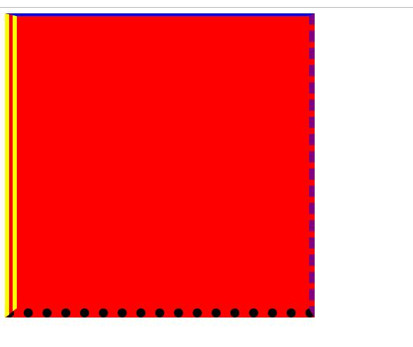
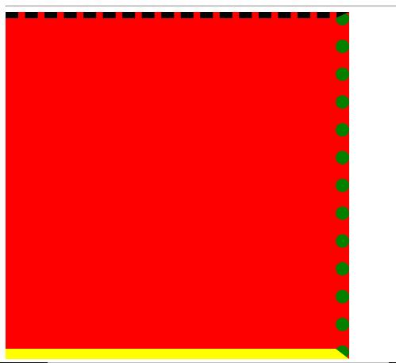

原文出处:本文由博客园博主心悦君兮君不知-睿提供。
原文连接:https://www.cnblogs.com/ruigege0000/p/11531124.html
原文连接:https://www.cnblogs.com/ruigege0000/p/11531124.html
一、边框属性
1.连写（分别设置四条边的边框）
border-width:上 右 下 左；
border-style:上 右 下 左；
border-color:上 右 下 左；
注意点：
（1）这三个属性是按照顺时针来赋值的，也就是说按照上右下左来赋值，而不是按照日常生活中的上下左右
（2）关于省略
i.三个（省略左）左右一样，上下按照咱们写的
ii.两个（省略左、下）左右一样，上下一样
ii.一个（省略右、左、下）这四个全都一样
例子：
.box{
width: 500px;
height:500px;
background-color: red;
border-width:2px 10px 15px 20px;
border-style:solid dashed dotted double;
border-color:blue purple black yellow;
}
.........省略代码.........
<div class="box"> </div>

2.非连写
border-top-width:
border-top-style:
border-top-color:
border-right-width:
border-right-style:
border-right-color:
border-bottom-width:
border-bottom-style:
border-bottom-color:
border-left-width:
border-left-style:
border-left-color:
挨个设置，非常不推荐使用，代码非常冗余，没什么价值用处
二、边框属性练习
border-top-width:
border-top-style:
border-top-color:
border-right-width:
border-right-style:
border-right-color:
border-bottom-width:
border-bottom-style:
border-bottom-color:
border-left-width:
border-left-style:
border-left-color:
三、源码：
d105_border_attribute_and_exercise.html
地址:
https://github.com/ruigege66/HTML_learning/blob/master/d105_border_attribute_and_exercise.html
2.CSDN：https://blog.csdn.net/weixin_44630050（心悦君兮君不知-睿）
3.博客园：https://www.cnblogs.com/ruigege0000/
4.欢迎关注微信公众号：傅里叶变换，个人账号，仅用于技术交流，后台回复“礼包”获取Java大数据学习视频礼包